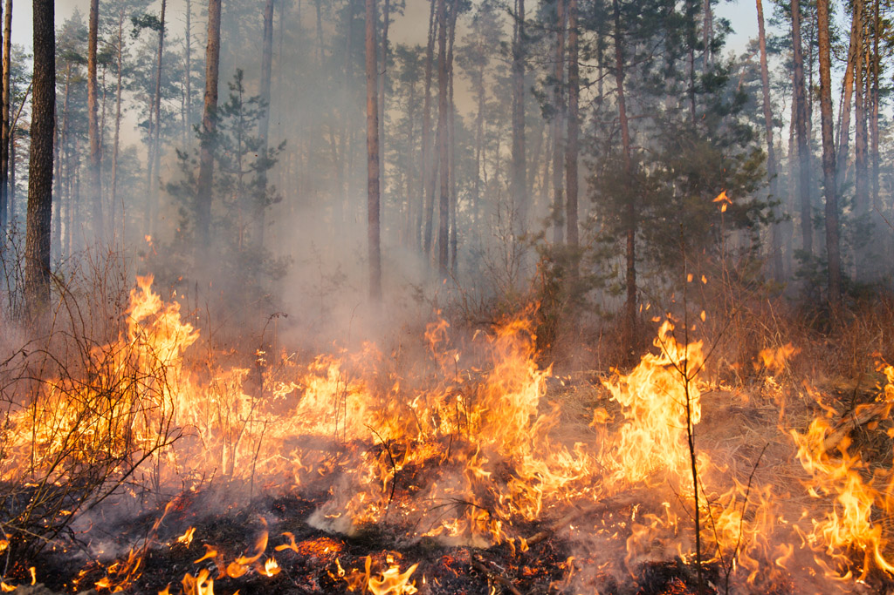
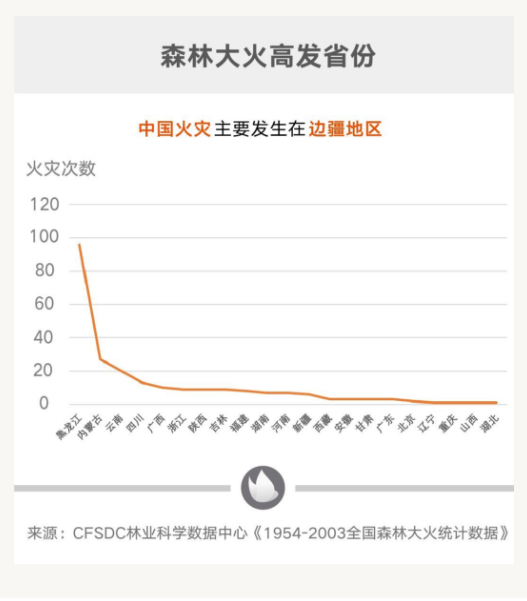
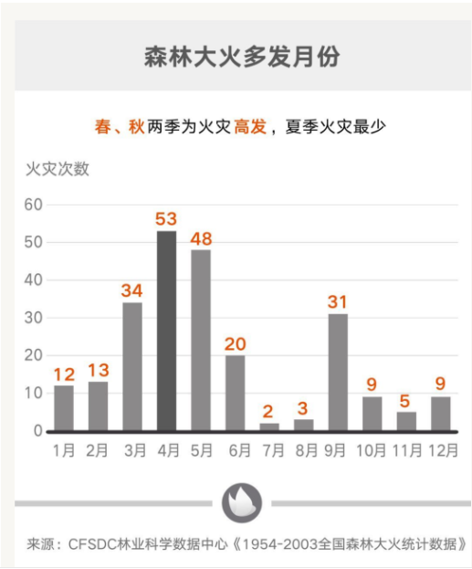

[ 火灾数据 / 火灾原因及损失 / 牺牲的英雄 / 注意防火 ]
1950年以来，我国年均发2113生森林火灾13067起，受害森5261林面积653019公顷，因灾伤亡4102580人。其中1988年以1653前，全国年均发生森林火灾15932起，受害森林面积947238公顷，因灾伤亡788人（其中受伤678人，死亡110人）。1988年以后，全国年均发生森林火灾7623起，受害森林面积94002公顷，因灾伤亡196人（其中受伤142人，死亡54人），分别下降52.2%、90.1%和75.3%。



[ 企业logo / 产品宣传册 / 网络广告 / 海报设计 ]
以标志、标准字、标准色为核心展开的完整的、系统的视觉表达
体系。
将企业理念、企业文化、服务内容、企业规范等抽象概念转换
为具体符号
[ 火灾类型 / 火灾逃生 / 火灾扑救 / 火灾常识 ]
火灾（huǒzāi）是指在时间或空间上失去控制的燃烧所造成的灾害。新的标准中，将火灾定义为在时间或空间上失去控制的燃烧。
在各种灾害中，火灾是最经常、最普遍地威胁公众安全和社会发展的主要灾害之一。
人类能够对火进行利用和控制，是文明进步的一个重要标志。所以说人类使用火的历史与同火灾作斗争的历史是相伴相生的，人们在用火的同时，不断总结火灾发生的规律，尽可能地减少火灾及其对人类造成的危害。在遇到火灾时人们需要安全、尽快的逃生。

森林大火高发省份

森林大火多发月